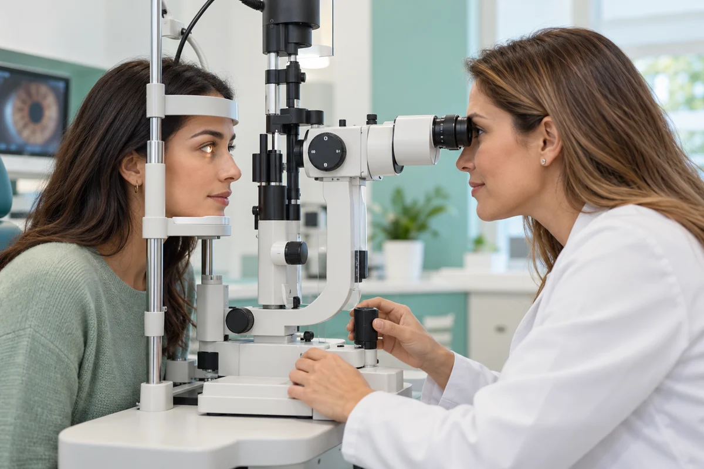

Examen Visual Computarizado
Utilizamos equipos computarizados para obtener una medición inicial de la refracción de tus ojos. Esta información se complementa con pruebas visuales y la evaluación del profesional.
Reservar CitaOftalmología y optometría para acompañarte en el cuidado de tus ojos, la evaluación de tu visión y la elección de tus lentes.
La salud visual va mucho más allá de leer letras en una cartilla. Cuidamos cada aspecto de tus ojos.

La catarata es la pérdida de transparencia del cristalino, la lente natural del ojo, que puede dificultar una visión clara. Realizamos una evaluación orientada a identificar señales de esta alteración y brindarte orientación sobre la atención y el seguimiento que puedas necesitar.
Agendar DescarteEl glaucoma es una enfermedad que puede afectar el nervio óptico. La evaluación busca identificar señales de riesgo y orientar la necesidad de una valoración oftalmológica, para favorecer el cuidado y seguimiento de tu salud visual.
Agendar DescarteEvaluamos tu capacidad para reconocer y diferenciar los colores mediante pruebas de percepción cromática. Este test permite identificar posibles dificultades en la visión del color y orientarte sobre cómo pueden influir en tus actividades cotidianas, de estudio o de trabajo.
Agendar TestEvaluamos los movimientos coordinados de ambos ojos. Esto permite descartar y tratar el estrabismo (desviación ocular) y forias latentes (tensión muscular), causantes frecuentes de visión doble, dolores de cabeza frecuentes y fatiga en lecturas prolongadas.
Agendar DescarteLa ambliopía es la falta de desarrollo del canal visual en un ojo, común en niños. Realizamos despistajes a temprana edad para corregir a tiempo este problema, previniendo dificultades futuras en el aprendizaje, concentración y rendimiento escolar.
Agendar DescarteEvaluamos la superficie ocular para descartar el crecimiento anormal de tejido sobre la córnea (pterigión), estimulado por el polvo, sequedad y radiación solar. Brindamos pautas de cuidado, tratamiento preventivo y remisión en caso de requerir cirugía.
Agendar DescarteDesde la evaluación de tu visión hasta la elección y adaptación de tus lentes. Te acompañamos con atención personalizada y seguimiento de tu comodidad visual.

Utilizamos equipos computarizados para obtener una medición inicial de la refracción de tus ojos. Esta información se complementa con pruebas visuales y la evaluación del profesional.
Reservar CitaEvaluamos tu visión de cerca y de lejos con pruebas y lentes de ensayo. Así determinamos la graduación que necesitas y comprobamos tu comodidad al ver.
Reservar CitaA partir de la evaluación visual, elaboramos la receta de tus lentes. Te orientamos sobre las opciones de corrección según tu graduación y tus actividades cotidianas.
Reservar CitaEvaluamos la opción de lentes de contacto adecuada para ti y comprobamos su ajuste y comodidad. Te enseñamos a colocarlos, retirarlos y cuidarlos para su uso diario.
Reservar CitaRevisamos cómo trabajan juntos ambos ojos, su alineación y coordinación al enfocar. Esta evaluación ayuda a identificar dificultades que pueden afectar tu comodidad visual al leer o realizar otras tareas.
Reservar CitaRevisamos la evolución de tu visión y la adaptación a tus lentes. Durante el control valoramos tu comodidad y los cambios que puedan requerir ajustes o una nueva evaluación.
Reservar Cita